Cheesecake Factory Beverage Menu: Prices, Calories & Every Drink Category (July 2026)
From specialty cocktails and frozen blends to iced teas, milkshakes, coffee, and non-alcoholic mocktails — every drink The Cheesecake Factory pours, with calories, ingredients, and pricing for July 2026. You'll also find nutrition callouts, lighter picks, and answers to the questions people actually ask before ordering.
Prices below are typical U.S. menu prices and can shift by a dollar or two depending on your location, since The Cheesecake Factory sets pricing restaurant by restaurant. Calorie counts come from the chain's standardized nutritional guide; recipes are made to order, so an actual pour can vary slightly from the listed value.
Download the Drink Menu PDF
Every drink, price, and calorie count on this page in one free, printable PDF.
Quick answer
The Cheesecake Factory's bar and beverage program breaks into roughly nine groups: specialty cocktails, mojitos, margaritas, martinis and chilled drinks, beer and wine, non-alcoholic specialty sodas, Factory Iced Teas, frozen drinks and creamy milkshakes, and hot drinks and espresso. Zero-proof versions of several signature cocktails are also available. Most specialty cocktails run $9 to $14, mocktails and sodas land in the $6 to $7 range, milkshakes and smoothies run $9 to $11, and iced tea, lemonade, or soda by the glass is usually $4 to $6.
Non-alcoholic specialty sodas
This lineup covers the fruit-forward, made-to-order sodas that sit on the non-alcoholic side of the bar menu. They're built the same way as the specialty cocktails, just without the liquor, so they lean sweet, bright, and a little fizzy.
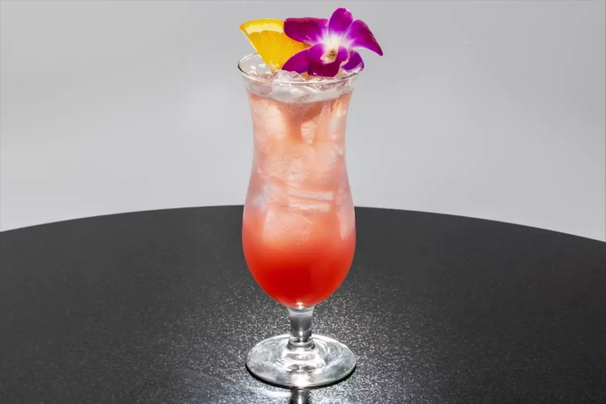
Paradise Punch
A tropical, fruit-heavy pour built for anyone who wants a cocktail-style drink without the alcohol.
Main ingredients: Tropical fruit juices, soda water
Ordering note: A common pick for guests who are driving or dining with kids but still want something more interesting than a soft drink
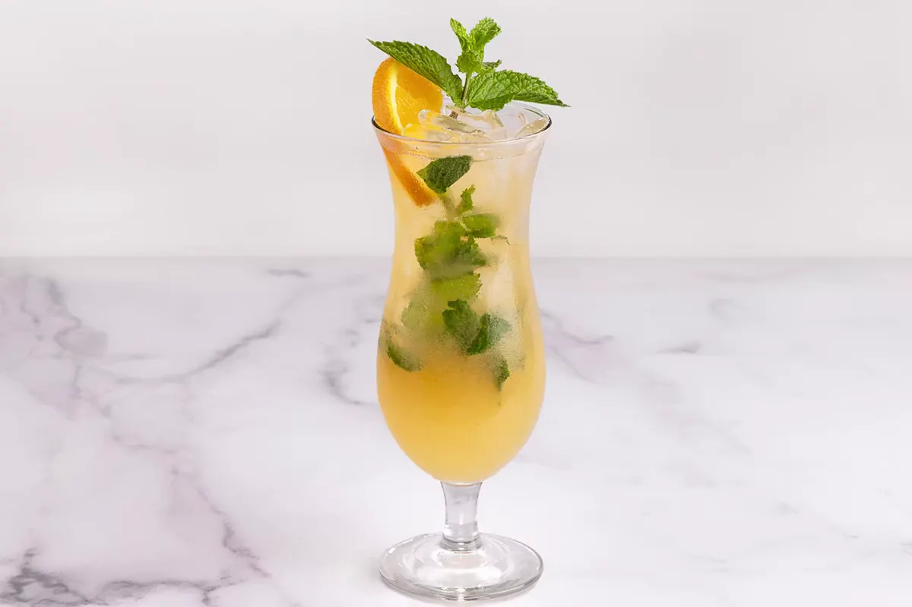
Passion Mint Fizz
A lighter, herbal-leaning soda with a cooling mint finish underneath the passion fruit sweetness.
Main ingredients: Passion fruit, fresh mint, soda water

Pineapple Cherry Limeade
A tart-sweet limeade built around pineapple and cherry, closer to a fruit punch than a classic limeade.
Main ingredients: Pineapple juice, cherry, fresh lime

Tropical Ginger Cooler
Ginger gives this one more bite than the other fruit sodas, which makes it a good match for spicier appetizers.
Main ingredients: Fresh ginger, tropical juices, soda water
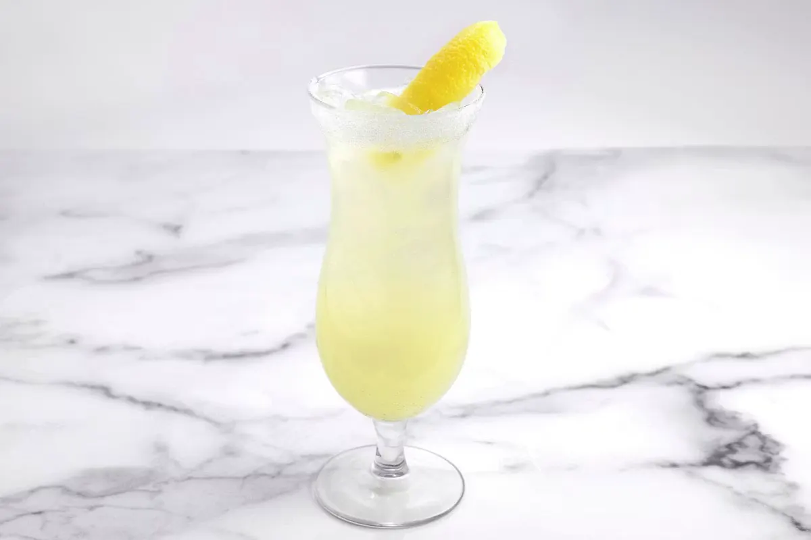
Sparkling Yuzu Lemonade
Yuzu adds a floral, slightly bitter citrus note that separates this from a standard lemonade.
Main ingredients: Yuzu, fresh lemonade, sparkling soda

Coconut Limeade
Coconut cream folded into a fresh limeade, served over ice for a dessert-adjacent but non-alcoholic option.
Main ingredients: Coconut, fresh lime
Factory Iced Teas
The Cheesecake Factory brews its iced teas from scratch and blends several of them with fruit and a splash of soda, so this section covers both the classic brewed teas and the fruit-infused versions on the same list.
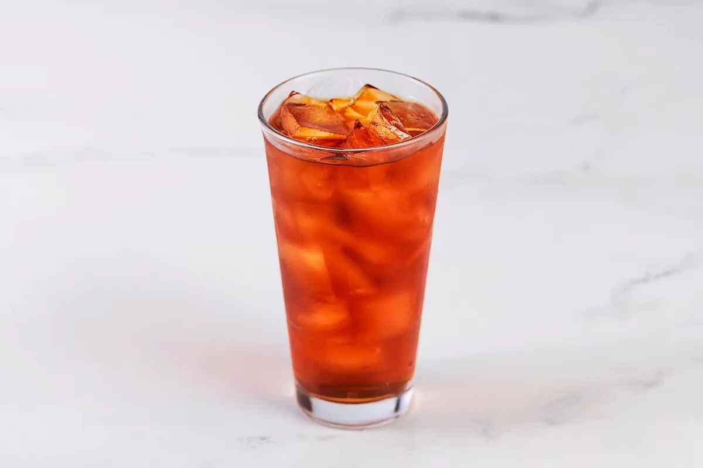
Freshly Brewed Black, Green or Tropical Iced Tea
The base tea program, unsweetened by default with sweetener available on request.
Main ingredients: Black, green, or tropical tea blend
Customization: Ask for it half-sweet or with fresh lemon if you want it dressed up without ordering a specialty tea

Arnold Palmer
Half brewed iced tea, half lemonade, served over ice.
Main ingredients: Freshly brewed iced tea, housemade lemonade

Skinny Long Island Iced Tea
A lighter build of the classic cocktail, made with the same four spirits but a lighter mixer pour to trim the calorie count.
Main ingredients: Vodka, rum, gin, tequila, fresh lemon, splash of cola
Ordering note: Still a strong pour despite the “skinny” name, since the calorie savings come from the mixer, not the alcohol
Lemonades & coolers
Beyond the sparkling sodas above, The Cheesecake Factory keeps a rotating handful of housemade lemonades and fruit coolers on the menu, usually served over ice in a tall glass.

Fresh Strawberry Lemonade
Housemade lemonade blended with real strawberry puree.
Main ingredients: Fresh lemonade, strawberry puree
Ordering note: Pairs well with spicier entrees since the sweetness balances heat

Lemon Mint Cooler
Housemade lemonade blended with fresh mint and served on the rocks.
Main ingredients: Fresh lemonade, fresh mint
Frozen drinks & smoothies
These are the blended, non-alcoholic drinks that come out of the frozen drink machine rather than a shaker. They run heavier on calories than the sodas above because of the fruit and ice cream base, so this is the section to check if you're comparing frozen options before ordering.
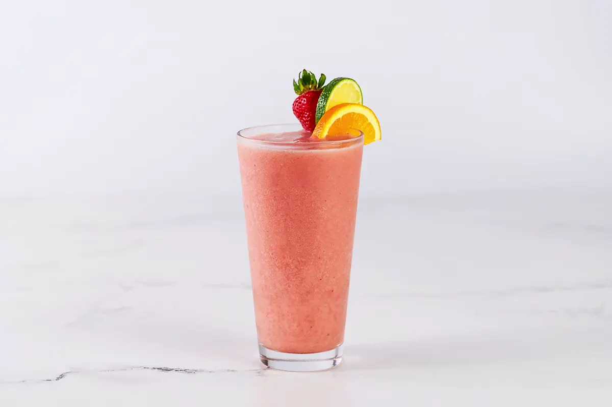
Strawberry Fruit Smoothie
A fruit-based smoothie rather than a milkshake, built around real strawberries and blended fruit juice.
Main ingredients: Strawberries, fruit juice blend, ice

Tropical Smoothie
A mixed tropical fruit blend, one of the lighter frozen options on the list.
Main ingredients: Tropical fruit blend, ice
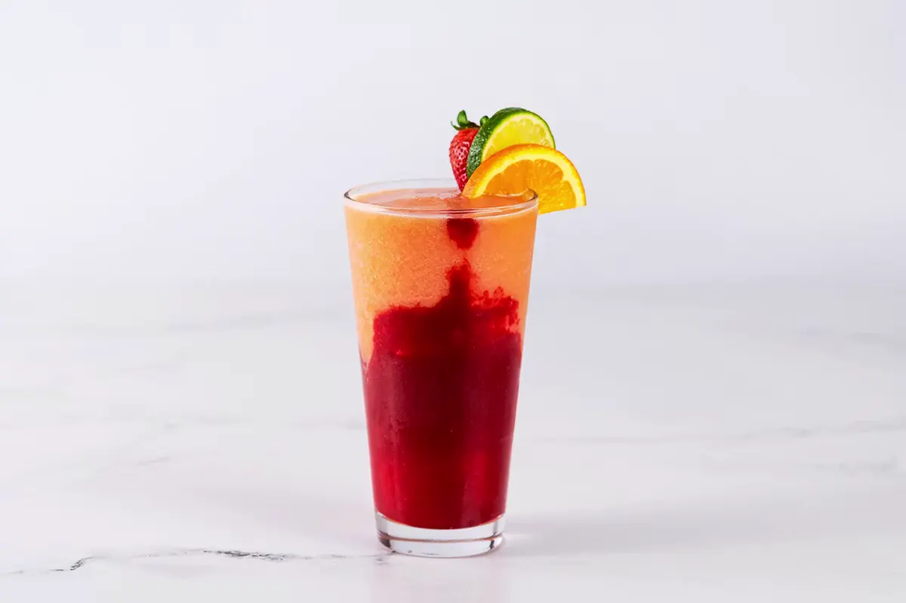
Peach Smoothie
The lowest-calorie frozen smoothie on the menu, built around peach puree.
Main ingredients: Peach puree, fruit juice, ice
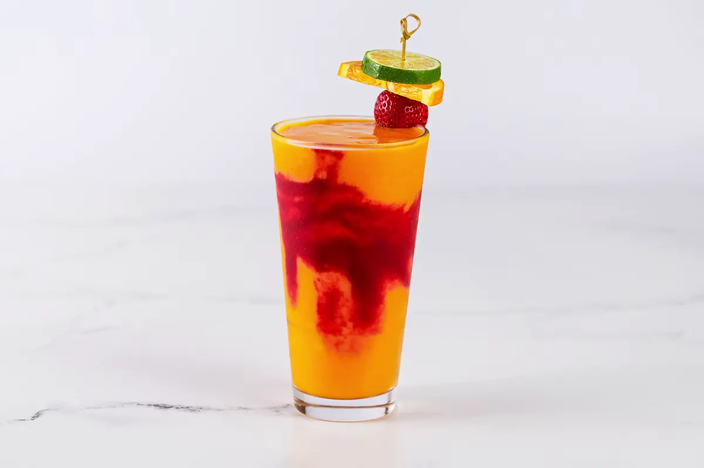
Frozen Iced Mango
A mango-forward frozen drink with a slushier, less creamy texture than the milkshakes.
Main ingredients: Mango puree, ice
Creamy milkshakes
The milkshake program is built on the chain's housemade ice cream and topped with whipped cream. These are some of the highest-calorie drinks on the entire menu, so they're listed here with full nutrition detail rather than rounded estimates.
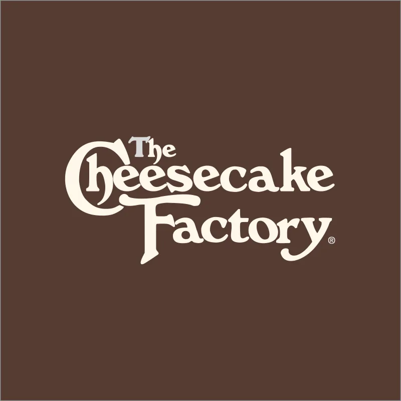
Chocolate Milkshake
The classic version, made with chocolate ice cream and topped with whipped cream.
Main ingredients: Chocolate ice cream, milk, whipped cream
Customization: Can be made without whipped cream on request, which trims a small amount of calories and fat
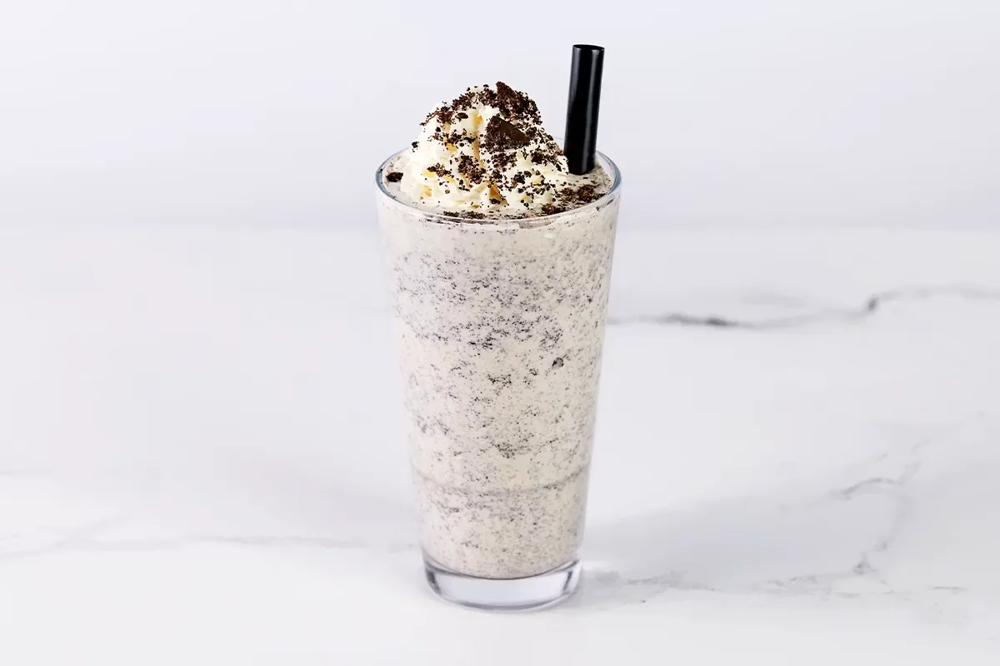
Vanilla Milkshake
Same base recipe as the chocolate version, built with vanilla ice cream instead.
Main ingredients: Vanilla ice cream, milk, whipped cream
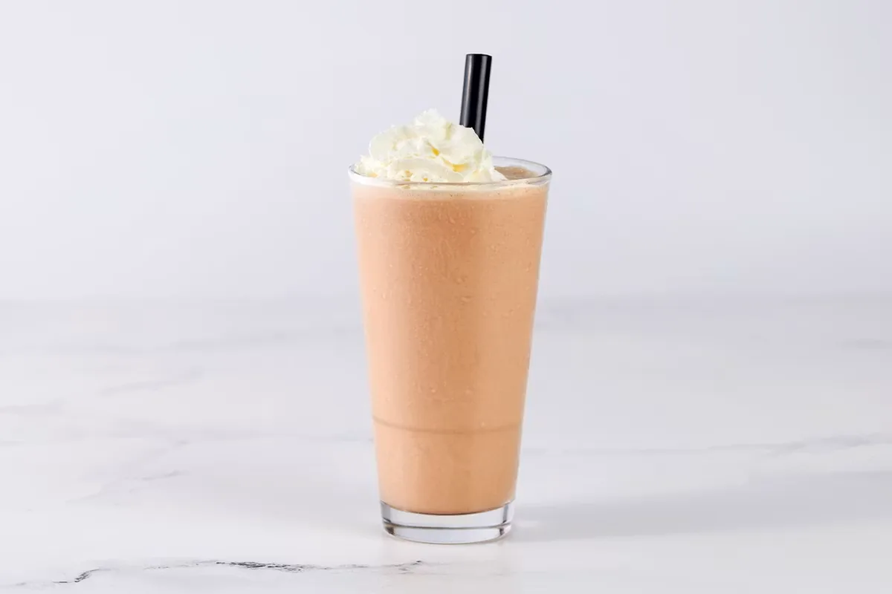
Strawberry Milkshake
Vanilla ice cream blended with strawberry, topped with whipped cream.
Main ingredients: Strawberry, ice cream, milk, whipped cream
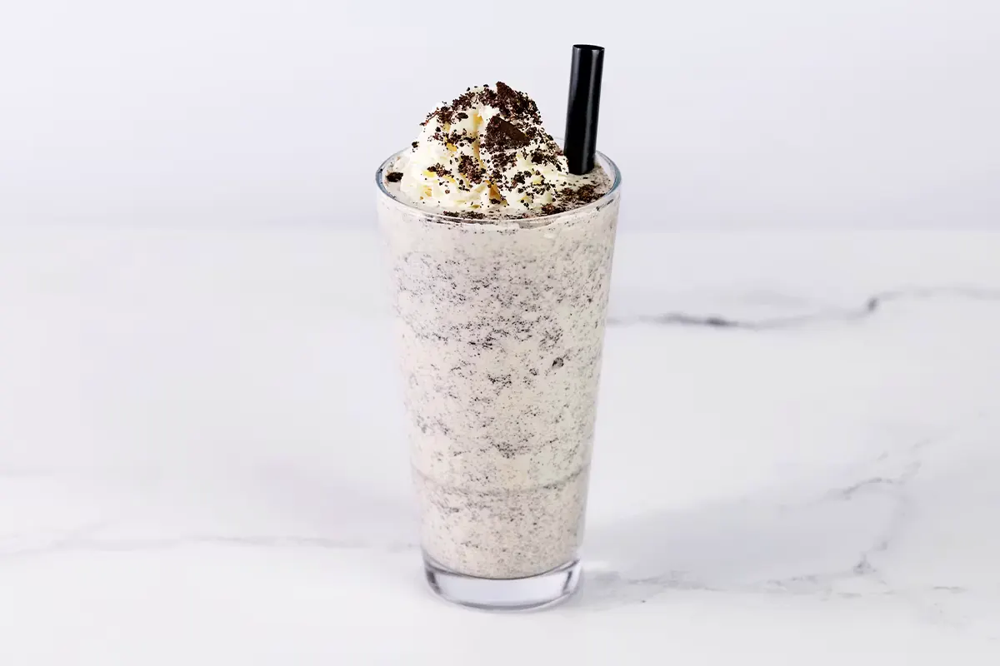
Oreo Milkshake
The most indulgent shake on the list, blending Oreo cookies into the base.
Main ingredients: Vanilla ice cream, Oreo cookies, milk, whipped cream
Ordering note: This is the highest-calorie drink on the beverage menu, so it's worth splitting if you're also planning on a slice of cheesecake
Hot drinks & espresso
The espresso bar covers standard coffee drinks plus a few dessert-leaning specialty coffees. Straight brewed coffee and espresso stay low-calorie; the flavored, cream-topped versions climb fast.
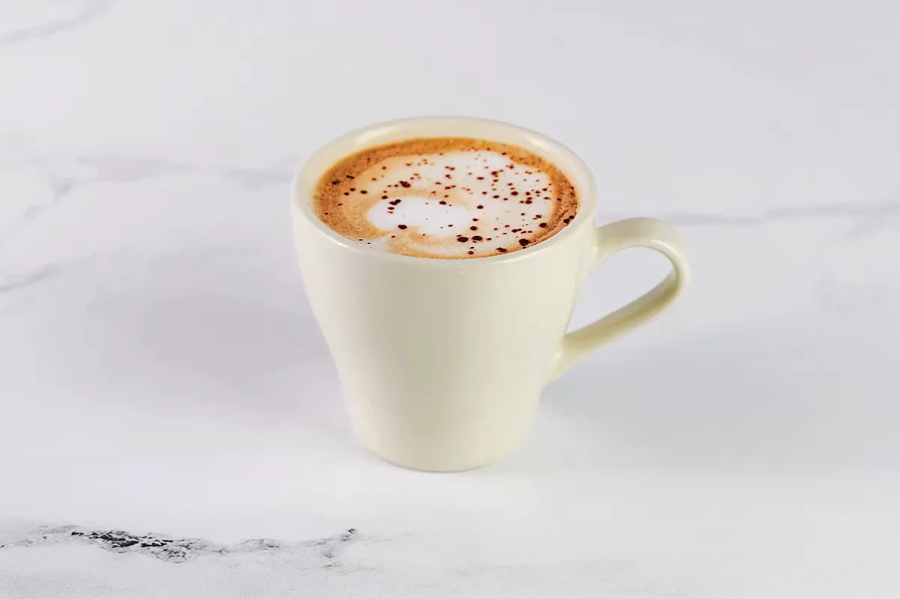
Double Espresso
A straight double shot, the lowest-calorie hot drink on the menu.
Main ingredients: Espresso
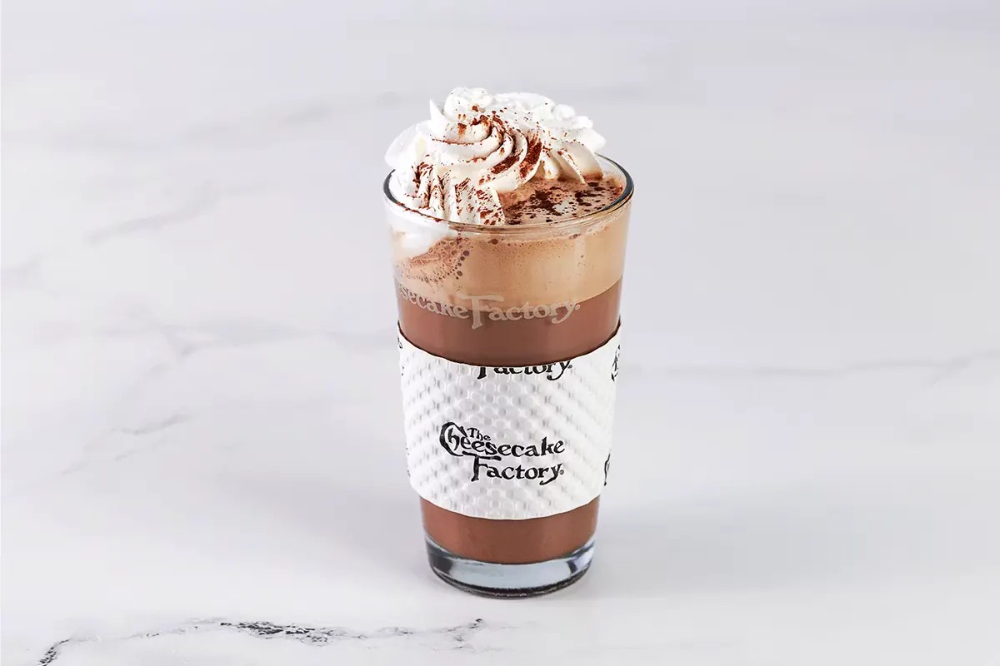
Cappuccino
Espresso with steamed milk and foam.
Main ingredients: Espresso, steamed milk

Cafe Latte
Espresso with a larger portion of steamed milk than a cappuccino.
Main ingredients: Espresso, steamed milk

Cafe Mocha
Espresso with steamed milk and chocolate, topped with whipped cream.
Main ingredients: Espresso, chocolate, steamed milk, whipped cream
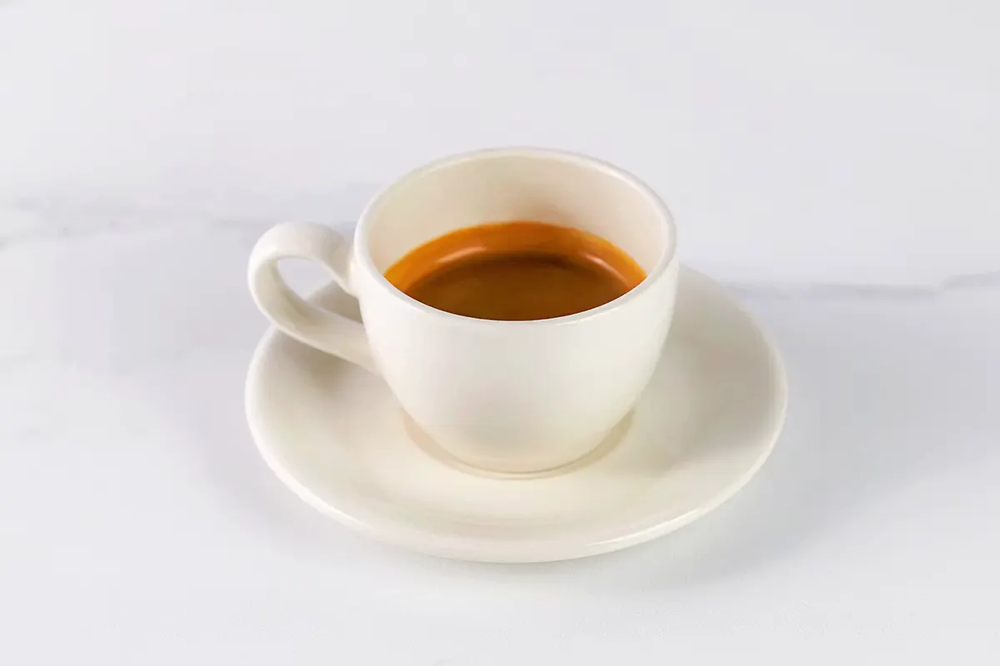
Caramel Royale Macchiato
A layered caramel and espresso drink, topped with whipped cream and caramel drizzle.
Main ingredients: Espresso, caramel, steamed milk, whipped cream

Factory Hot Chocolate
Steamed chocolate milk topped with whipped cream, the richest hot drink on the list.
Main ingredients: Chocolate, steamed milk, whipped cream
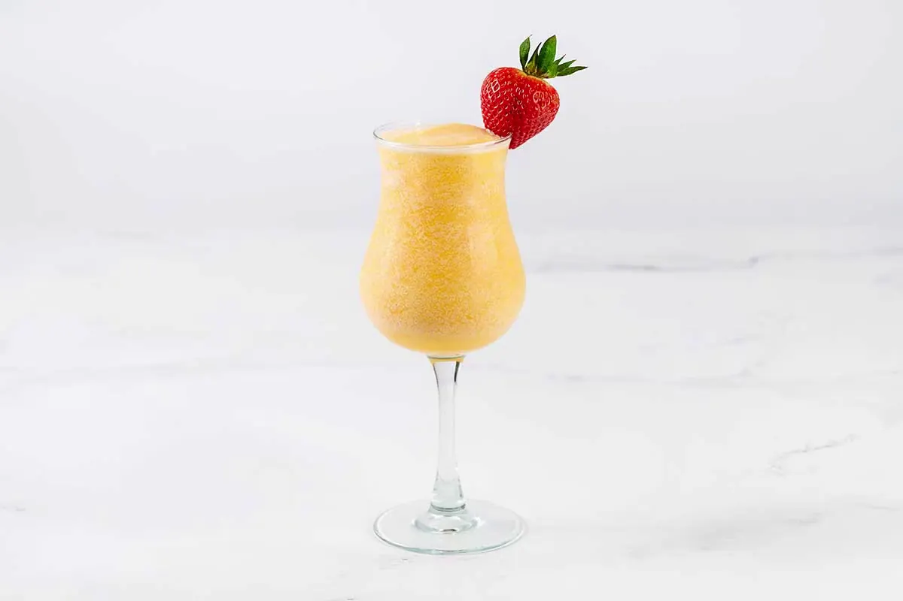
Cold Brew Coffee
A slow-steeped cold brew, served over ice.
Main ingredients: Cold brew coffee
Specialty cocktails
This is the core cocktail list, built around fresh juice, housemade syrups, and fruit rather than pre-made mixers. Several of these also show up on the Puerto Rico (PR), Utah (UT), or Hawaii (HI) versions of the menu with adjusted alcohol content, which is why you may see slightly different calorie counts by state.
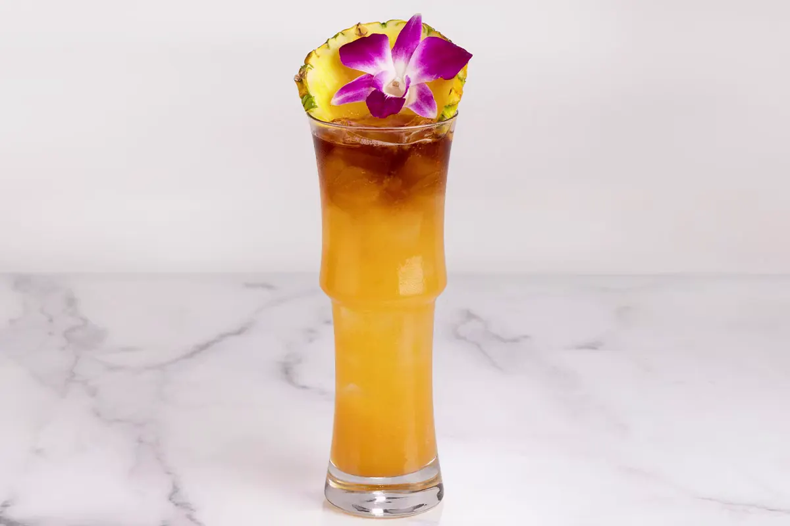
Mai Tai
A rum-based tiki classic with a nutty, sweet finish.
Main ingredients: Rum, orange curaçao, lime juice, almond syrup
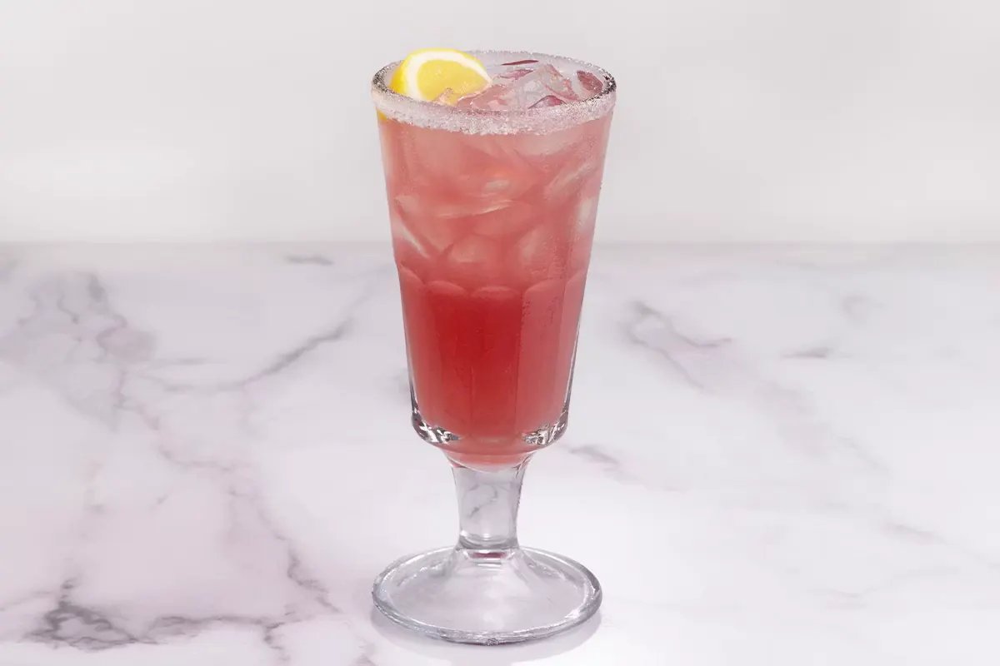
J.W.'s Pink Lemonade
Citrus vodka and black raspberry liqueur poured over the restaurant's housemade lemonade.
Main ingredients: Absolut Citron vodka, black raspberry liqueur, house lemonade
Tasting note: Leans sweet and fruity, with the raspberry liqueur softening the citrus vodka rather than the alcohol standing out

Georgia Peach
A peach-forward cocktail with a lighter, fruitier profile than the tiki drinks.
Main ingredients: Peach liqueur, peach puree, citrus

Pineapple Moscow Mule
A pineapple twist on the classic vodka and ginger beer mule, served over crushed ice.
Main ingredients: Vodka, pineapple, ginger beer, lime
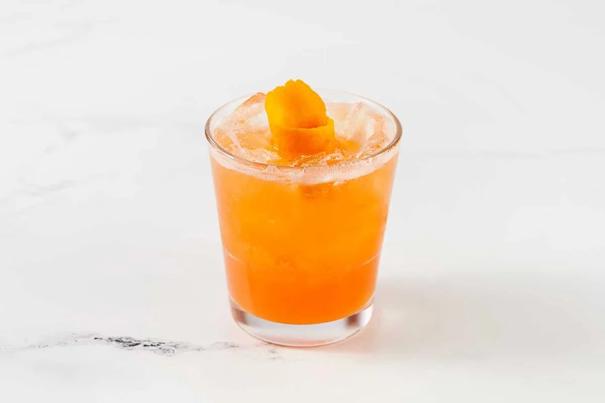
Whiskey Smash
A bourbon-based cocktail with Aperol and passion fruit that softens the whiskey's bite.
Main ingredients: Yellowstone bourbon, Aperol, fresh lemon sour, passion fruit
Tasting note: Closer to a fruity whiskey sour than a traditional smash, with the passion fruit cutting the Aperol's bitterness
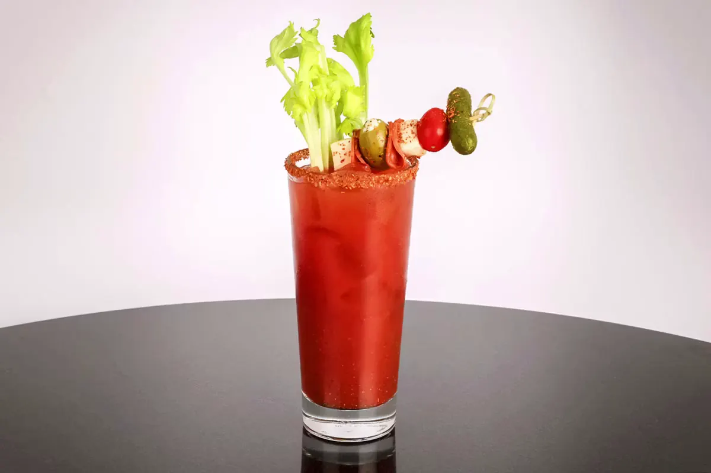
Espresso Martini
A coffee-forward martini built for the after-dinner crowd.
Main ingredients: Vodka, coffee liqueur, espresso
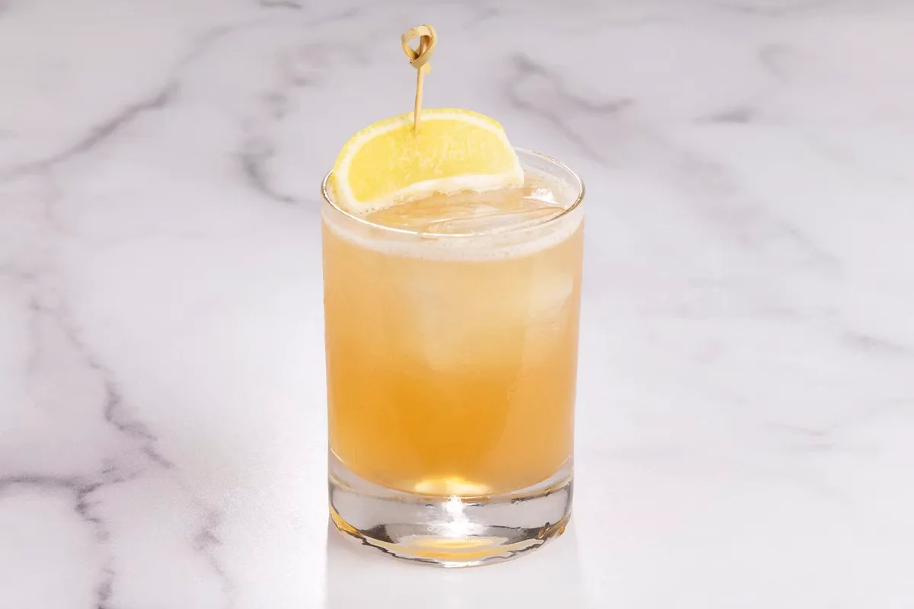
Whiskey & Ginger
A simple, low-frills bourbon and ginger beer pour.
Main ingredients: Bourbon, ginger beer, lime

Long Island Iced Tea
The four-spirit classic, made with fresh lemon instead of bottled sour mix and finished with a splash of cola.
Main ingredients: Vodka, rum, gin, tequila, fresh lemon, cola
Tasting note: The fresh lemon keeps this from tasting syrupy, and the alcohol comes through without feeling heavy-handed
Mojitos
The Cheesecake Factory runs a small but well-reviewed mojito program built on two rums and fresh mint and lime rather than bottled mixers.

Mojito
The classic build, made with two rums and finished with club soda.
Main ingredients: Don Q Cristal and Bacardi rums, fresh mint, fresh lime, club soda
Tasting note: Crisp and well-balanced thanks to the club soda, though some guests ask for extra lime on the side

SkinnyLicious Mojito
A lower-calorie build of the same drink, made with a lighter pour and less added sugar.
Main ingredients: Rum, fresh mint, fresh lime, club soda

Coconut Mojito
The classic mojito with coconut rum blended in for a sweeter, tropical finish.
Main ingredients: Rum, coconut, fresh mint, fresh lime
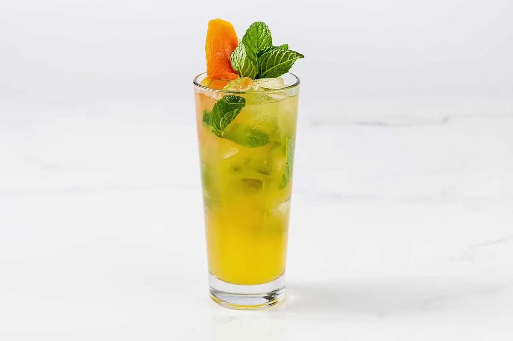
Passion Fruit Mojito
Passion fruit puree added to the classic mojito base.
Main ingredients: Rum, passion fruit, fresh mint, fresh lime
Margaritas
Margaritas are made with silver tequila and fresh lime rather than a bottled margarita mix, which is a detail worth knowing if you've had a sweeter version elsewhere.

Margarita
The house classic, kept simple with tequila, agave, and fresh lime.
Main ingredients: Silver tequila, agave, fresh lime
Tasting note: Leans a bit sweeter than a bar-style margarita, with the sour mix coming through more than straight lime juice
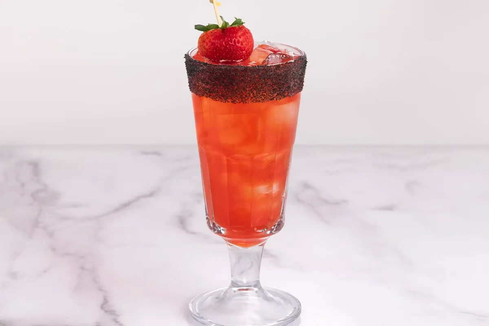
Strawberry Infused Margarita
The house margarita blended with real strawberry.
Main ingredients: Tequila, strawberry, agave, fresh lime
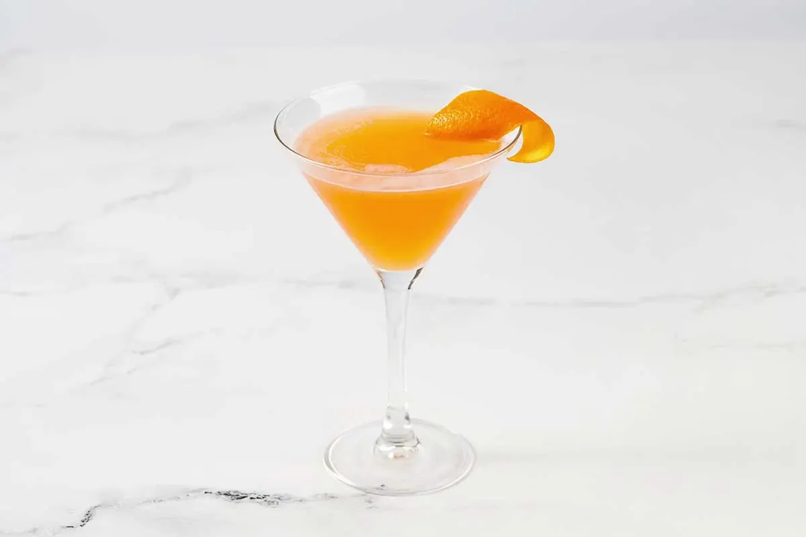
Passion Fruit Margarita
A tropical variation built around passion fruit puree.
Main ingredients: Tequila, passion fruit, agave, fresh lime
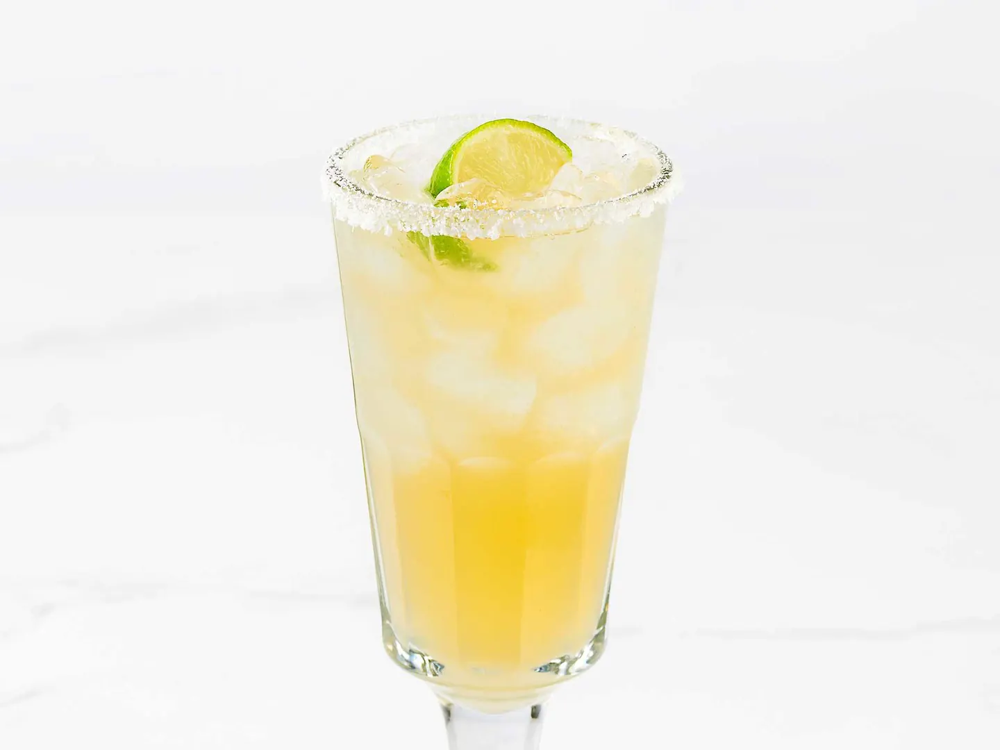
The Ultimate Margarita
A premium, top-shelf margarita build meant to sip slower than the house version.
Main ingredients: Premium tequila, orange liqueur, fresh lime
Beer & wine
Beer and wine selections change by location, so the categories below cover how the program is structured rather than a fixed list of labels.

Draft & Bottled Beer
The Cheesecake Factory customizes its beer list restaurant by restaurant to reflect local preferences, mixing national domestic and import brands with regional craft options.
Ordering note: Ask your server for the current draft list, since it rotates more often than the printed menu
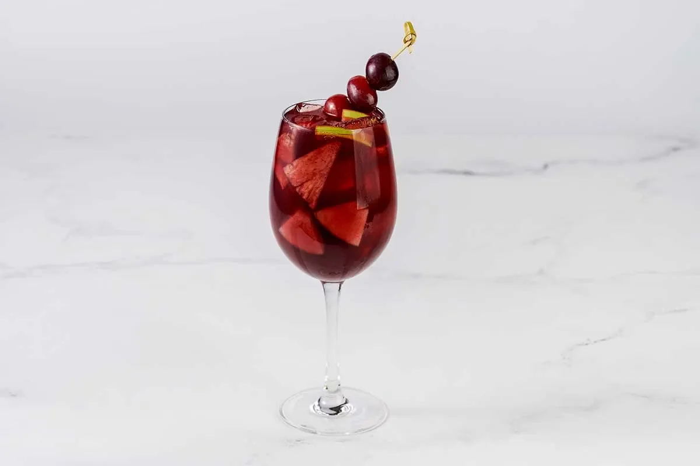
Wine List
The wine program draws from California, Chile, Columbia, Europe, and Australia, offered by the glass or bottle.
Ordering note: Several California reds and whites are available in half-carafe pours at some locations, which is worth asking about if you don't want a full bottle
Zero-proof cocktails
For guests who want the flavor of a specialty cocktail without alcohol, several signature drinks have a zero-proof version built from the same syrups, juice, and garnish, just without the spirit.

Zero Proof Mojito
The mint, lime, and club soda base of the classic mojito, without the rum.
Main ingredients: Fresh mint, fresh lime, club soda
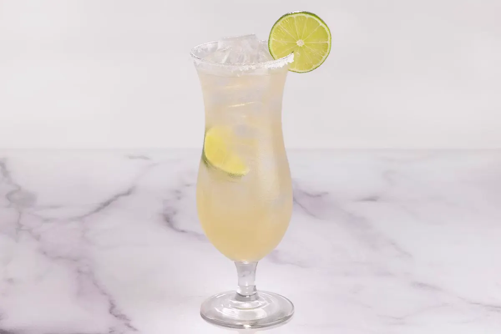
Zero Proof Margarita
A non-alcoholic take on the house margarita, built with lime and agave.
Main ingredients: Agave, fresh lime, citrus
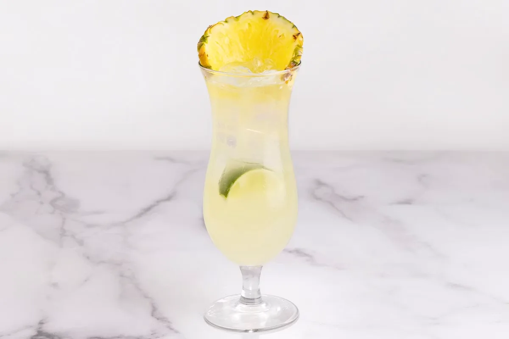
Zero Proof Pineapple Mule
A non-alcoholic version of the pineapple Moscow mule, built on ginger beer and pineapple.
Main ingredients: Pineapple, ginger beer, lime
To-go beverages
Beverages ordered for pickup or delivery come sealed in spill-resistant, to-go-specific packaging, and pricing runs slightly different from the dine-in bar menu since frozen cocktails and draft beer generally aren't available to go.
| Beverage | Price | Notes |
|---|---|---|
| To-Go Soft Drinks | around $3.75 | Coke, Diet Coke, Sprite and similar |
| To-Go Flavored Lemonade | around $4.50–$5.25 | Housemade lemonade in rotating fruit flavors |
| To-Go Arnold Palmer | around $4.50 | Half iced tea, half lemonade |
| To-Go Freshly Brewed Iced Tea | around $3.50 | Unsweetened by default |
| To-Go Certified Organic Tea | around $2.95–$3.50 | Hot brewed, iced on request |
| To-Go Freshly Brewed Coffee | around $3.75 | Regular or decaf |
| Fiji Natural Artesian Water | around $5.75 | Bottled |
| San Pellegrino Sparkling Water | around $5.75 | Bottled |
Frozen drinks and draft beer aren't typically available for pickup or delivery, since they don't travel well; if a frozen cocktail is available at your location for takeout, order it last so it doesn't sit and separate before you leave.
Calorie comparison: lightest to heaviest
Use this table if you're comparing drinks head-to-head rather than reading category by category. It pulls the lowest and highest calorie option from each major group above.
| Category | Lightest option | Heaviest option |
|---|---|---|
| Hot Drinks & Espresso | Double Espresso (~5 cal) | Factory Hot Chocolate (~800–850 cal) |
| Non-Alcoholic Sodas | Coconut Limeade (~100 cal) | Pineapple Cherry Limeade (~150 cal) |
| Cocktails | Whiskey Smash (~190–220 cal) | Mai Tai (~280–330 cal) |
| Mojitos | SkinnyLicious Mojito (~150 cal) | Passion Fruit Mojito (~270 cal) |
| Frozen & Smoothies | Peach Smoothie (~330 cal) | Frozen Iced Mango (~380 cal) |
| Creamy Milkshakes | Vanilla Milkshake (~1,000–1,100 cal) | Oreo Milkshake (~1,300–1,600 cal) |
Frequently asked questions
Yes, the beverage menu is available on the restaurant's website under the Menu tab, broken into specialty drinks, mojitos, margaritas, beer and wine, iced teas, and non-alcoholic beverages. Pricing shown online is a general guide and can differ slightly from what's posted in your local restaurant.
Most locations run happy hour on weekdays, including Friday, from 4 to 6 p.m., with discounted pricing on select cocktails, wine, and beer. Availability and exact hours vary by location, so it's worth calling ahead or checking with your server.
Yes. Several signature drinks, including the mojito, margarita, and pineapple mule, have zero-proof versions made with the same fresh juice and garnish, just without the spirit.
The SkinnyLicious Mojito and Whiskey Smash are among the lightest cocktails, both landing under 220 calories, compared to over 300 calories for drinks like the Mai Tai or Georgia Peach.
Yes, milkshakes can be customized without whipped cream on request, which trims a small amount of calories and fat from the total.
Yes, the creamy milkshakes are built on the restaurant's housemade ice cream rather than a soft-serve or powdered base, which is part of why they run higher in calories than a typical fast-food shake.
Some cocktails do. Several specialty drinks list separate calorie and ingredient values for Utah (UT), Puerto Rico (PR), and Hawaii (HI) locations, usually reflecting local alcohol regulations or ingredient sourcing.
Brewed coffee is typically refillable for dine-in guests, though this can vary by location, so it's worth confirming with your server.
The Mojito and Margarita are consistently among the most ordered drinks, along with tropical options like the Mai Tai and Piña Colada, based on reviews from happy hour guests and regular diners.
Non-alcoholic beverages like soft drinks, lemonade, iced tea, and coffee are available to go. Frozen cocktails and draft beer are generally limited to select locations and aren't guaranteed to travel well, so dine-in is the more reliable way to order them.
Yes, Diet Coke, unsweetened brewed iced tea, and sparkling water like San Pellegrino are available for guests looking for a zero-sugar option.
Wine by the glass typically runs $9 to $16 depending on the selection and location, with the list drawing from California, Chile, Columbia, Europe, and Australia.
Final thoughts
The Cheesecake Factory's beverage menu covers a lot more ground than most casual dining chains, spanning fresh-juice cocktails, a real espresso bar, housemade milkshakes, and a rotating beer and wine list that changes by location. If you're watching calories, the SkinnyLicious Mojito, brewed iced tea, and zero-proof cocktails are the safest picks, while the Oreo Milkshake and Factory Hot Chocolate sit at the far end of the scale. Since pricing and availability shift from one restaurant to the next, checking your specific location's online menu before you go is still the most reliable way to know exactly what you'll pay.